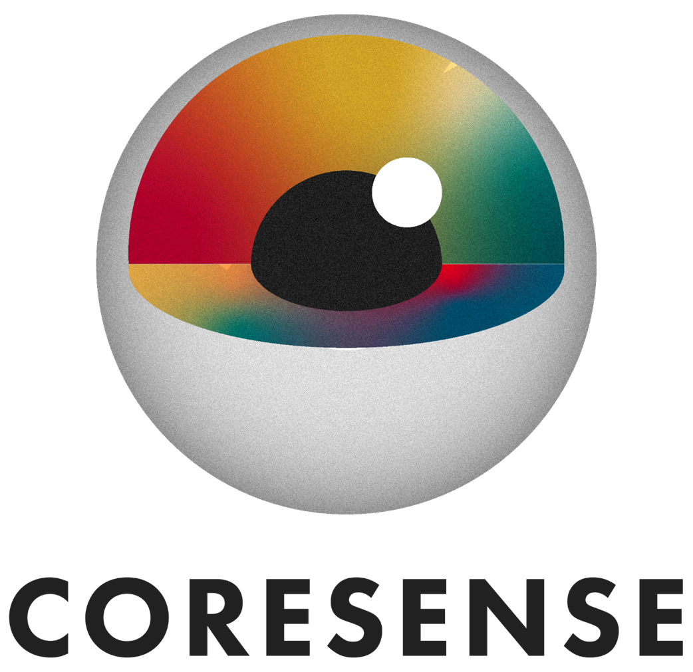

Brownfield collective awareness in Aerostack2 for task allocation and collision avoidance in photovoltaic inspections
What this deliverable implements and why it matters
D7.4 implements the CORESENSE Collective Awareness Architecture (defined in D7.3) inside the Aerostack2 drone framework. A fleet of drones can now discover each other at runtime, distribute inspection targets via distributed auctions, and safely negotiate shared flight corridors — all without a central coordinator, and without modifying any existing Aerostack2 component.
CA Gateway node + CA Client library. Peer discovery, modelet routing, and behavior registration. The inter-agent communication backbone.
C++ KBInterface and Python KBMonitorNode bridge behaviors and mission scripts to the CORESENSE knowledge_core RDF store.
Implements the auctions collective model. Drones bid with distance costs; greedy-sequential convergence assigns targets identically on every drone.
Implements the consensus collective model. Pairwise path-lock arbitrates corridor access before motion begins.
greedy_sequential or pairwise_path_lock changes the algorithm, not the protocol.Bid, CAPathLockRequest, CAPathLockGrant — exchanged between cognitive modules.D7.3 CA Module subsystems and their Aerostack2 implementations
CA Gateway + CA Client. Namespaced topics, automatic peer discovery, type-dispatched modelet routing.
StateInterface (self-model: pose, twist, battery) + behavior registration in CA Gateway (cognitive module catalog).
CA Gateway peer discovery. 1-second timer scans for gateway_in topics — no fleet-size configuration needed.
Package as2_ca — the inter-agent communication backbone
Any drone that (1) deploys a CA Gateway node, (2) uses the CA Client API, and (3) exchanges only as2_msgs vocabulary is immediately interoperable with every conforming peer — the gateway enforces all three obligations at the transport, registry, and semantic levels.
A 1-second timer scans the live ROS 2 topic graph for topics ending in /gateway_in. Newly found topics become peer publishers; publishers whose topics disappear are pruned. No fleet-size configuration needed — satisfies IT-FR-028 (Swarm Size Awareness).
void CA_Gateway::check_peers()
{
const std::string suffix = "/" + INCOMING_TOPIC_SUFFIX;
auto topics = this->get_topic_names_and_types();
for (auto & [name, types] : topics) {
if (name ends with suffix && name != own_incoming_topic)
if (not already known) create publisher to name;
}
prune peers with no subscribers;
}Header-only (as2_ca/ca_gateway_client.hpp). Two operations mirror native ROS 2 pub-sub but work fleet-wide:
create_subscription but covers all current and future peers; delivers sender namespace as second argumentpublish but addressed by drone namespace names, not topic paths// Register handler — covers ALL peers automatically:
client_.register_module<as2_msgs::msg::Bid>(
"bid", "auction_behavior",
[this](const as2_msgs::msg::Bid & msg, const std::string & sender) {
auction_plugin_->on_bid_received(msg, sender);
});
// Forward to named peers — no topic paths needed:
client_.forward_IA_msg<as2_msgs::msg::Bid>(bid, "bid", bidders_);as2_msgs)Sent by the auctioneer to open a round. Carries the list of items and the set of bidder namespaces.
Core auction modelet. Parallel arrays of item name and corresponding cost amounts, one per item.
Requests corridor access. Contains requester_id, monotonic req_id, and the full path[] as a polyline.
Peer acknowledgement of a lock. Contains granter_id, requester_id, and the matching req_id.
Broadcast when a corridor is freed. All peers flush their deferred_ queue for the releasing drone.
Envelope for any modelet on the inter-drone channel: sender namespace, type string, raw data[].
| Dimension | CA Gateway | Raw ROS 2 DDS |
|---|---|---|
| Discovery overhead | Peer registry resolved once at send time | Graph queried per message type at runtime |
| Naming coupling | Typed registry — no topic names in behavior code | Per-type topic names hard-coded |
| Transport flexibility | Backend swappable (DDS, Zenoh, MQTT) | Tied to DDS |
| Fleet reconfiguration | Handled automatically | Explicit pub/sub rewiring required |
Connecting behaviors to the CORESENSE knowledge_core RDF triple store
Synchronous-style API for asserting, retracting, and querying RDF facts. A dedicated background thread lets query_kb block safely from inside ROS 2 callbacks.
add_fact(subj, pred, obj)
remove_fact(subj, pred, obj)
query_kb(clauses, vars) // first binding
query_kb_all(clauses, vars) // all bindings
register_event_handler(topic, cb)Event-driven mission layer. Declares RDF triple patterns; knowledge_core notifies on match. Mission scripts react without polling or direct call dependencies on behaviors.
Handler signature: handler(bindings, ctx) — plain Python function, no base class. ctx exposes query(), add_fact(), publish_mission_update(), pose, mission_status.
KB Monitor config (JSON — loaded at node startup)
{
"kb_namespace": "kb",
"handlers": [
{
"id": "assignment_done",
"patterns": ["?drone is_assigned_to ?target"],
"one_shot": false,
"func": {
"path": "/handlers.py",
"func_name": "on_assignment"
}
}
]
}Handler function (Python — invoked by knowledge_core on every pattern match)
def on_assignment(bindings, ctx):
# bindings: list of dicts, one per matched triple set
for b in bindings:
msg = MissionUpdate()
msg.drone_id = b['drone']
msg.action = MissionUpdate.RESUME
msg.target = b['target']
ctx.publish_mission_update(msg)
# ctx also exposes: ctx.query(), ctx.add_fact(), ctx.pose, ctx.mission_statusDistributed task allocation via the auctions collective model
The auctioneer distributes inspection targets (items). All drones simultaneously compute distance-based costs (bids) and broadcast them via the CA Gateway. Each drone independently runs greedy_sequential — the same deterministic rule on the same bids produces the same assignment everywhere, with no central aggregator or extra communication rounds.
Deterministic: assign each item to lowest-cost agent, break ties by namespace. Same rule + same bids = same assignment everywhere. No extra rounds.
Reads current pose from State Interface, computes Euclidean distance to a 3D target. Swappable without touching the behavior protocol.
After convergence, asserts drone is_assigned_to target and auction_status done triples. KB Monitor triggers mission interpreter resumption for every drone.
Safe corridor arbitration via the consensus collective model
Before any drone moves, it must acquire a distributed lock on its intended corridor. Peers grant the lock if their paths don't conflict. If two drones conflict simultaneously, the lexicographically smaller namespace wins. Consensus = receiving a grant from every known peer.
Conflict detection: path_geometry::min_polyline_distance() checks all pairs of segments between two polylines. If result < safety_distance (default 1.5 m), paths conflict.
deferred_ queue, flush when RELEASING.bool should_grant = true;
if (state_ == HOLDING && conflicts(req.path, locked_path_))
should_grant = false;
else if (state_ == REQUESTING && conflicts(req.path, locked_path_))
should_grant = req.requester_id < own_id_; // lex priority
if (should_grant) {
send_grant(req.requester_id, req.req_id);
peer_held_paths_[req.requester_id] = req.path;
} else {
deferred_.push_back({req.requester_id, req.req_id, req.path});
}How components combine to enable D7.1 use-case families
drone.auction()is_assigned_to, resumes missiondrone0 battery_status critical triggers landingD7.2 functional requirements satisfied by the implemented components
| ID | Description | Implemented by | Status |
|---|---|---|---|
| IT-FR-002 | Collaborative planning | Auction Behavior (greedy_sequential) | ✔ Satisfied |
| IT-FR-003 | System replanning on failure | Auction Behavior triggered by KB Monitor | ✔ Satisfied |
| IT-FR-016 | Failure resilience | KB Monitor + re-auction on UC1 | ✔ Satisfied |
| IT-FR-027 | Information sharing between agents | KB Interface (shared RDF store) | ✔ Satisfied |
| IT-FR-028 | Swarm size awareness | CA Gateway peer discovery (dynamic) | ✔ Satisfied |
| IT-FR-031 | Trajectory collective-awareness | Collision Avoidance (path-lock broadcast) | ✔ Satisfied |
| IT-FR-032 | Security distance maintenance | Collision Avoidance (safety_distance) | ✔ Satisfied |